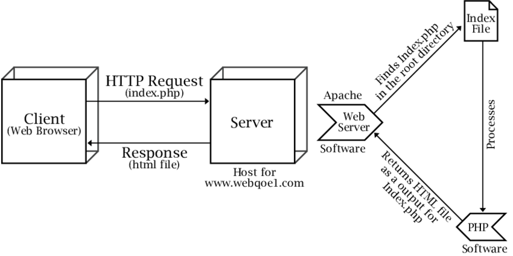

Web Servers

The Apache HTTP Server, often referred to as Apache, is a popular open-source web server that serves as an example for explaining the primary functions performed by modern web servers when handling an HTTP request. These functions ensure that the requested resources are delivered to the client's web browser efficiently and correctly. Here's a detailed breakdown of these functions:
1. Listening for Incoming Requests:
Apache continuously listens for incoming HTTP requests on a specific port (usually port 80 for HTTP and port 443 for HTTPS). It may also listen on custom ports if configured.
2. Connection Handling:
When a client (typically a web browser) initiates an HTTP request, Apache accepts the incoming connection request and establishes a communication channel between the client and the server.
3. Request Parsing:
Apache parses the incoming HTTP request, which includes the following components:
- Request method (e.g., GET, POST, PUT, DELETE).
- Requested URL (Uniform Resource Locator).
- HTTP version.
- Request headers (e.g., User-Agent, Accept-Encoding, Host).
- Request body (for POST and PUT requests).
4. URL Mapping and Virtual Host Configuration:
Apache's configuration includes directives that determine how requests are mapped to specific directories or virtual hosts. Virtual hosts allow hosting multiple websites on a single server, each with its own domain or IP address.
5. Content Retrieval and Generation:
Based on the parsed request, Apache retrieves the requested resource or generates content dynamically through server-side scripting languages like PHP, Python, or Ruby. Apache may also serve static files (HTML, CSS, JavaScript, images) directly from the file system.
6. Access Control and Authentication:
Apache can enforce access control rules to restrict access to specific resources or directories based on user credentials or IP addresses. It can also handle authentication processes, such as Basic Authentication or OAuth, to verify user identities.
7. Error Handling:
If Apache encounters errors during request processing (e.g., 404 Not Found, 500 Internal Server Error), it generates appropriate error responses and sends them back to the client.
8. Request Routing:
Apache can perform URL rewriting and redirection to route requests to different locations or rewrite URLs for search engine optimization (SEO) purposes.
9. Response Generation:
Apache generates an HTTP response that includes the following components:
- Status line (e.g., HTTP/1.1 200 OK).
- Response headers (e.g., Content-Type, Content-Length, Cache-Control).
- Response body (containing the requested content or dynamically generated data).
10. Content Compression and Caching:
Apache can compress response content to reduce bandwidth usage if the client supports it (e.g., using GZIP). It may also implement caching mechanisms to store and serve cached responses for improved performance.
11. Logging and Monitoring:
Apache logs various details about incoming requests and responses, such as IP addresses, requested URLs, and response codes. This logging information is crucial for monitoring server activity and troubleshooting issues.
12. Security:
Apache can implement security measures like access control, SSL/TLS encryption, and security headers to protect against common web vulnerabilities.
13. Load Balancing (Optional):
In cases of high traffic or redundancy, Apache can function as a load balancer, distributing incoming requests across multiple backend servers for improved scalability and fault tolerance.
14. Response Sending:
Finally, Apache sends the HTTP response back to the client through the established connection, ensuring that the response is correctly formatted and adheres to the HTTP protocol.
The Apache HTTP Server, like other modern web servers, plays a pivotal role in handling HTTP requests by parsing, processing, and delivering web content while providing security, access control, and various configuration options to meet the needs of different websites and applications.